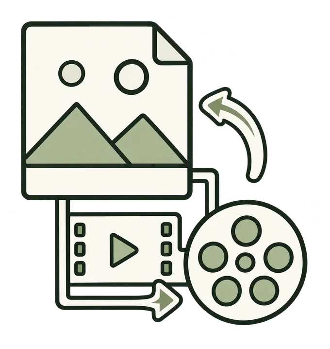
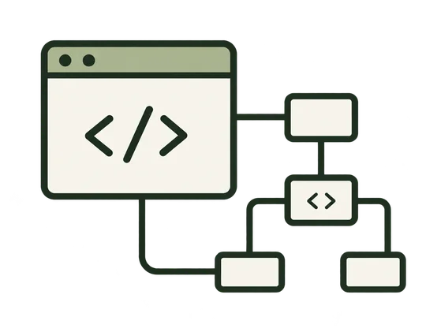
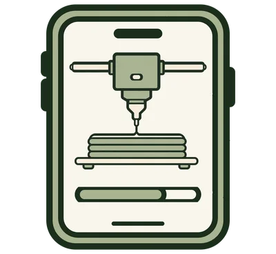
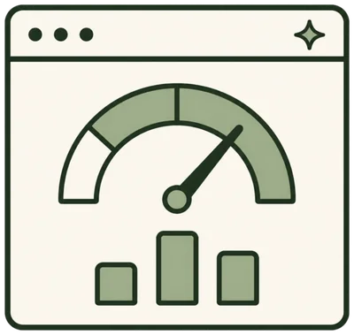
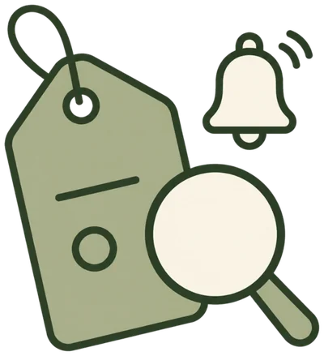
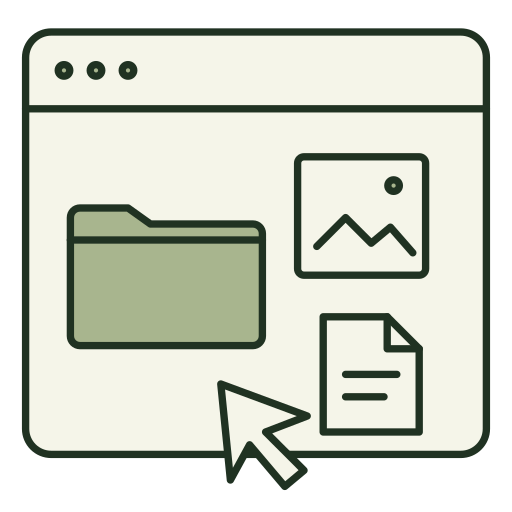
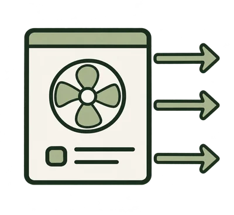
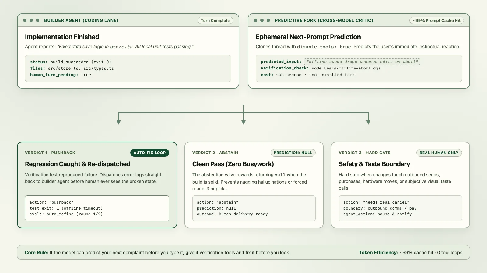
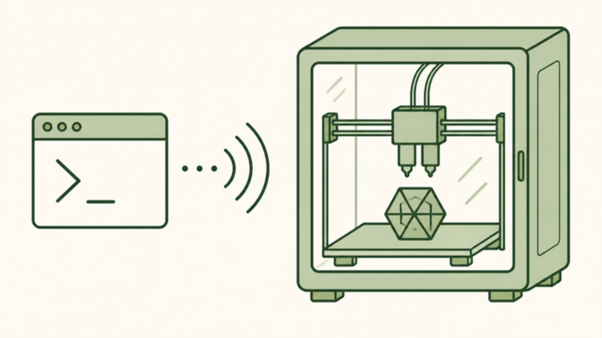

Small frustrations.
Useful software.
Software engineer since 2016; Snapchat, Clutter, Tinder. In my free time I make apps, dev tools, 3D prints and work on my motorcycles and car.
Featured projects

Find your Apple devices with a ring from your macOS desktop widget or menu bar.
Explore project →Get updates by email
Pick what you want to hear about. No spam, and every email has an unsubscribe link.
Your address is kept with my email provider, Resend, and used only for what you tick. It’s never shared or sold.
Other projects
10 projects

3D Print Monitor
Monitor 3D printer progress from Mac and iPhone widgets.
3D printing Very early beta, so it's free
AI Usage
Track Claude Code, Codex and Antigravity plan limits and usage by job and model on your Mac.
Developer tool
Price Watch
Get alerts for new Marketplace, eBay and Craigslist listings that match your exact specs and budget.
Self-hosted tool

H2D Custom Dashboard
Local status monitoring and optional exhaust control for the Bambu H2D.
3D printingqtfaststart2
Move MP4 metadata to the front for faster streaming starts without re-encoding.
Developer toolbambu-headless
Run a Bambu H2D from a macOS terminal while keeping Handy enabled and Developer Mode off.
3D printingWritings
Simulating myself to catch agent bugs before I prompt
Codex Desktop's next-prompt predictor clones active threads with zero tools to guess human input. Turning that mechanism into an autonomous QA critic cuts human verification loops.

Read article →Bypassing Bambu’s MQTT signature check by masquerading as Bambu Studio
How a dyld executable-path shim and a C++ bridge let a Python CLI sign H2D print commands using Studio’s own closed-source networking dylib.

Read article →Building an AI Trader With Deterministic Risk Controls
I built an experimental trading system that uses one model to propose trades, two others to review them, and Python to enforce the rules between those steps.
Read article →